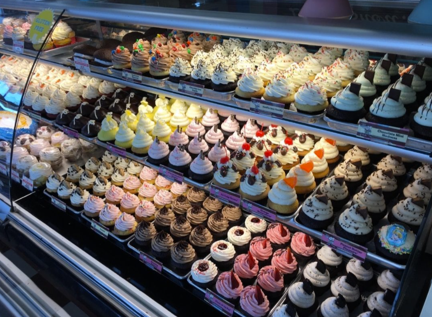

 Welcome to Toronto Cupcake, your go-to destination for the most delicious and freshly baked cupcakes in Toronto and the Greater Toronto Area (GTA). Whether you're celebrating a birthday, hosting a corporate event, or just craving a sweet treat, we've got the perfect cupcakes for every occasion. Order online 24/7 and enjoy fast, reliable delivery across the GTA! Delicious cupcakes made fresh for every occasion. We cater to corporate events, birthdays, weddings, and more. Browse through our selection of custom cupcakes or create your own!
Why does Toronto Cupcake have the best cupcakes in the GTA GTHA?
- Baked Fresh Daily: Our cupcakes are baked fresh every day to guarantee maximum flavor and quality.
- Perfect for Any Occasion: Whether it's a corporate event, wedding, birthday, or just because, our cupcakes are sure to impress.
- Custom Designs Available: Need something unique? We offer custom cupcake designs to match your event's theme or personal taste.
- Fast and Reliable Delivery: We deliver across Toronto, the GTA, and beyond, ensuring your cupcakes arrive fresh and on time.
Specialty Cupcakes for Every Season
Our cupcake offerings change with the seasons, so there's always something new to try! Check out our Always Available Cupcakes for classic flavors, or explore our Holiday Cupcakes and Special Event Cupcakes for something truly unique.
Celebrate with Toronto Cupcake
Make your celebrations extra special with Toronto Cupcake. We offer a wide variety of cupcakes that are perfect for any event, from corporate meetings to weddings and birthdays. Our signature pink box delivery service is available across Toronto and the GTA, making it easy to enjoy our delicious cupcakes wherever you are.
Order Cupcakes Online Today!
Ready to indulge in Toronto's best cupcakes? Order online today and have fresh, delicious cupcakes delivered right to your door. Whether you need cupcakes for a party or just want to treat yourself, Toronto Cupcake has you covered!